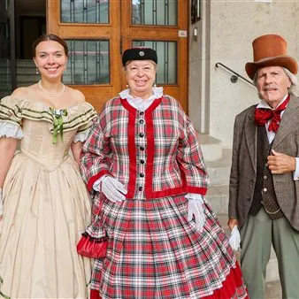

da sab 24 ott a dom 1 nov
Kaiserfest
Sabato 24 ottobre 2026 alle ore 11 in piazza Ponterosso si terrà la cerimonia d'inaugurazione di Kaiserfest: all'insegna di visite guidate a luoghi simbolo della città, mostra mercato, sfilata e ballo in abito asburgico, l'iniziativa che quest'anno giunge alla sua nona edizione.…
 Indicazioni
Indicazioni
- Costi e prenotazioni
- Costo non indicato · Prenotazione non indicata
- Programma
- Programma da verificare. Apri la fonte ufficiale per orari e possibili aggiornamenti.
- In caso di maltempo
- Nessuna indicazione specifica pubblicata.
- Note
- Acquisito automaticamente dalla fonte.
L’EVENTO
Descrizione completa
Sabato 24 ottobre 2026 alle ore 11 in piazza Ponterosso si terrà la cerimonia d'inaugurazione di Kaiserfest: all'insegna di visite guidate a luoghi simbolo della città, mostra mercato, sfilata e ballo in abito asburgico, l'iniziativa che quest'anno giunge alla sua nona edizione.
Kaiserfest torna forte del successo delle otto precedenti edizioni, con la peculiarità che questa nona edizione coincide con i 110 anni dalla morte di Francesco Giuseppe , avvenuta il 21 novembre 1916 a Schoenbrunn, la residenza estiva degli Asburgo a Vienna: dal punto di vista di Pozenu , alla fine dell' 800 Trieste sotto gli Asburgo divenne la terza città dell'Impero dopo Vienna e Praga, a causa del fatto che l'Austria aveva bisogno di un grande porto con un fondale adeguato e funzioni emporiali, il che portò la città giuliana a conoscere il suo massimo splendore nel XIX secolo. Alta Marea Eventi ha quindi ritenuto di celebrare anche quest'anno quel periodo proponendo una serie di visite guidate mirate, in luoghi strettamente connessi al periodo asburgico, condotte dai collaboratori dell'agenzia viaggi di Serena Giorgini , Mittelnet, nonché dagli storici Zeno Saracino e Luca Bellocchi .
Programma Kaiserfest 2026
Sabato 24 ottobre
Ore 11 Inaugurazione in piazza Ponterosso alla presenza delle Autorità e dei rappresentanti delle realtà partecipanti
Domenica 25 ottobre
Salita a Opicina con il tram e visita del borgo carsico e del Borarium (il Museo della Bora) a cura dello storico Zeno Saracino. Evento a pagamento con prenotazione obbligatoria. Prenotazioni e informazioni al 338/7062067 - 393/4552120 o via web https://mittelnet.com/trieste-a-tu-x-tu/
Mercoledì 28 ottobre
Ore 10:30 Visita al Museo Postale e Telegrafico della Mitteleuropa di Poste Italiane (Piazza Vittorio Veneto 1).
Ore 11.30 Visita della Cappella arcivescovile con Luca Bellocchi, storico dell'arte. Evento a pagamento con prenotazione obbligatoria. Prenotazioni e informazioni al tel 338/7062067 - 393/4552120 o via web https://mittelnet.com/trieste-a-tu-x-tu/
Venerdì 30 ottobre
Ore 15.30 Visita allo Spugnificio Rosenfeld. Evento a pagamento con prenotazione obbligatoria. Prenotazioni e informazioni al tel 338/7062067 - 393/4552120 o via web https://mittelnet.com/trieste-a-tu-x-tu/
Sabato 31 ottobre
Ore 10.30 Passeggiata alla scoperta del Porto Vecchio e visita della Centrale Idrodinamica a cura dello storico Zeno Saracino. Evento a pagamento con prenotazione obbligatoria. Prenotazioni e informazioni al tel 338/7062067 - 393/4552120 o via web https://mittelnet.com/trieste-a-tu-x-tu/
Domenica 1 novembre
Ore 12:00 Sfilata e Danza in abiti d'epoca a cura dell'Associazione "Trieste 800" e Associazione "Serenissima Danze 800" presso piazza Unità.
Ore 15.00 Visita della dimora storica del barone Pasquale Revoltella a cura dello storico Zeno Saracino. Evento a pagamento con prenotazione obbligatoria. Prenotazioni e informazioni al tel 338/7062067 - 393/4552120 o via web https://mittelnet.com/trieste-a-tu-x-tu/
IL PROGRAMMA
Programma e orari
Appuntamenti raccolti dalle fonti elencate. Dove manca un orario, non è ancora disponibile in questa scheda.
Programma pubblicato
- Ore 10:30 Visita al Museo Postale e Telegrafico della Mitteleuropa di Poste Italiane (Piazza Vittorio Veneto 1).
- Ore 11.30 Visita della Cappella arcivescovile con Luca Bellocchi, storico dell'arte. Evento a pagamento con prenotazione obbligatoria. Prenotazioni e informazioni al tel 338/7062067 - 393/4552120 o via web
- Ore 15.30 Visita allo Spugnificio Rosenfeld. Evento a pagamento con prenotazione obbligatoria. Prenotazioni e informazioni al tel 338/7062067 - 393/4552120 o via web
- Ore 12:00 Sfilata e Danza in abiti d'epoca a cura dell'Associazione "Trieste 800" e Associazione "Serenissima Danze 800" presso piazza Unità.
INFORMAZIONI UTILI
Prima di partire
- Controllare la fonte prima di partire.
ORGANIZZAZIONE